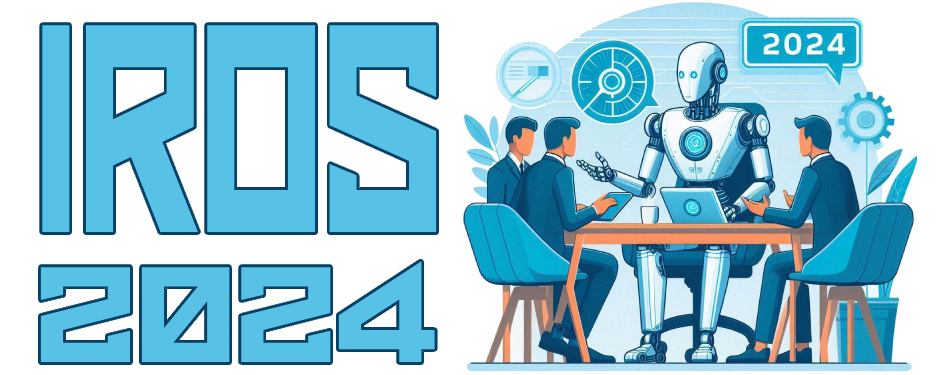

Workshop on Nonverbal Cues for Human-Robot Cooperative Intelligence
Humans can perceive social cues and the interaction context of another human to infer the internal states including cognitive and emotional states, empathy, and intention. This unique ability to infer internal states leads to effective social interaction between humans desirable in many intelligent systems such as collaborative and social robots, and humanmachine interaction systems. However, it is challenging for machines to perceive human states under noisy real-world settings, which are usually measured by noninvasive sensors. Recent works investigating the potential solutions for the estimation of human states under controlled conditions using facial features with the off-the-shelf camera by leveraging deep learning methods. This workshop aims to bring interdisciplinary researchers across computer vision, artificial intelligence, robotics, and human-computer interaction together to share current research achievements and discuss future research directions for human behavior and state understanding, and their potential application, especially in the wild environment. Specifically, we are interested in cognition-aware computing by integrating environment contexts and multi-modal nonverbal social cues not limited to gaze interaction, body language and para language. More importantly, we extend multi-modal human behavior research to infer the internal states of humans. This is a challenging problem yet important to realize effective interaction between humans and intelligent systems.
Keywords: "Human: Face, gaze, body, pose, gesture, movement, attention, cognitivestate, emotion state, intention, empathy, Environment: Object"
Secondary subject: "Human-Robot cooperative intelligence", "Nonverbal cues recognition from audiovisual", "Human internal state inference from multi-modality", "Vision applications and systems", "Human-Object interaction and scene understanding"
It is desirable for intelligent systems like robots, virtual agents, human-machine interfaces to collaborate and interact seamlessly with humans in the era of Industry 5.0, where intelligent systems must work alongside humans to perform a variety of tasks anywhere at home, factories, offices, transit, etc. The underlying technologies to achieve efficient and intelligent collaboration between humans and ubiquitous intelligent systems can be realized by cooperative intelligence, spanning interdisciplinary studies between robotics, AI, human-robot and -computer interaction, computer vision, cognitive science, etc.
One of the main considerations to achieve cooperative intelligence between humans and intelligent systems is to enable everyone and everything to know each other well, like how humans can trust or infer the implicit internal states like intention, emotion, and cognitive states of each other. The importance of empathy to facilitate human-robot interaction has been highlighted in previous studies . However, it is difficult for intelligent systems to estimate the internal states of humans because they are dependent on the complex social dynamics and environment contexts. This requires intelligent systems to be capable of sensing the multi-modal inputs, reasoning the underlying abstract knowledge, and generating the corresponding responses to collaborate and interact with humans.
There are many studies on estimating internal states of humans through measurements of wearables and non-invasive sensors, but it would be difficult to implement these solutions in the wild because of the additional sensors to be worn by humans. One promising solution is to use audiovisual data like nonverbal behavior cues consisting of gaze interaction, facial expression, body language and paralanguage to infer the internal states of humans. Researchers in cognitive and social psychology have long advocated that these nonverbal behaviors are subconsciously generated by humans and reflect the internal states of humans under different contexts. Some salient examples are the studies on emotion recognition using facial and body language in controlled environment. It remains an open question for intelligent systems to sense and recognize nonverbal cues and reason the rich underlying internal states of humans in the wild and noisy environments.
This workshop is dedicated to discussing computational methods for sensing and recognition of nonverbal cues and internal states in the wild to realize cooperative intelligence between humans and intelligent systems. We gather researchers from different expertise, yet having the common goal, motivation, and resolve to explore and tackle this delicate issue considering the practicality of industrial applications. We are calling for papers to discuss novel methods to realize human-robot cooperative intelligence by sensing and understanding humans’ behavior, internal states, and to generate empathetic interactions.
- Human internal state inference, e.g., cognitive, emotional, intention models.
- Recognition of nonverbal cues, e.g., gaze and attention, body language, para-language.
- Multi-modal sensing fusion for scene perception.
- Nonverbal behavior generation for robots/agents, e.g., gaze salience, gesture.
- Synchronization of nonverbal and verbal behavior
- Learning algorithms for cooperative intelligence, e.g., imitation learning.
- Generative and adversarial algorithms to enhance human-robot interaction, e.g., LLMs, diffusion models, VLMs.
- Empathetic interaction between humans and intelligent systems.
- Robust sensing of facial and body key points.
- Social interaction dynamics modeling, e.g., harmony level, engagements.
- Personalization of intelligent systems from nonverbal cues and trust evaluation.
- Applications of cooperative intelligence in the wild.
We invite authors to submit unpublished papers (IEEE format) to our workshop, to be presented at a workshop session upon acceptance. Submissions will undergo a double-blind review process and must be submitted via EasyChair. Three-way presentation approach is designed to foster active participation
- Spotlight talks (7 mins talk + 3 mins Q&A)
- In-person posters for in-depth discussions
- Short pre-recorded videos (about 3 minutes) on the workshop page
-
June 18, 2024 PST
Notification of workshop acceptance
-
June 15, 2024 PST
Submission of final title and abstract to IROS 2024
-
July 1, 2024 PST
Workshop webpage open with submission
-
July 31, 2024 PST
Workshop paper submission deadline
-
August 21, 2024 PST
Workshop paper reviews deadline
-
August 31, 2024 PST
Notification to authors
-
September 14, 2024 PST
Camera-ready deadline
-
September 28, 2024 PST
Pre-recorded video deadline
-
September 1, 2024 PST
Submission of the URL of workshop’s website
-
October 14, 2024 PST
Workshop preferred date
We plan a half-day event for 4 hours, including talks by two invited speakers, and one interactive session. For participants who could not attend in person, we will disseminate the papers and pre-recorded videos on our workshop page, which also consists of a comment section for Q&A.
- 08:30 08:35 Welcome and opening remarks (5 mins)
- 08:35 09:15 Invited talk I (40 mins, including 5 mins Q&A)
- 09:15 09:45 Accepted workshop papers (3 papers, 10 mins each)
- 09:45 10:05 Invited IROS2024 papers (2 papers, 10 mins each)
- 10:05 10:40 Coffee break and poster session (35 mins)
- 10:40 11:20 Invited talk II (40 mins, including 5 mins Q&A)
- 11:20 11:50 Accepted workshop papers (3 papers, 10 mins each)
- 11:50 12:25 Interactive session (35 mins)
- 12:25 12:30 Closing remarks (5 mins)
We intend to have speakers from different ethnic backgrounds, countries, and career stages. Specifically, we confirmed the attendance of one speaker from the industry, and the other speaker from the academia is pending confirmation.